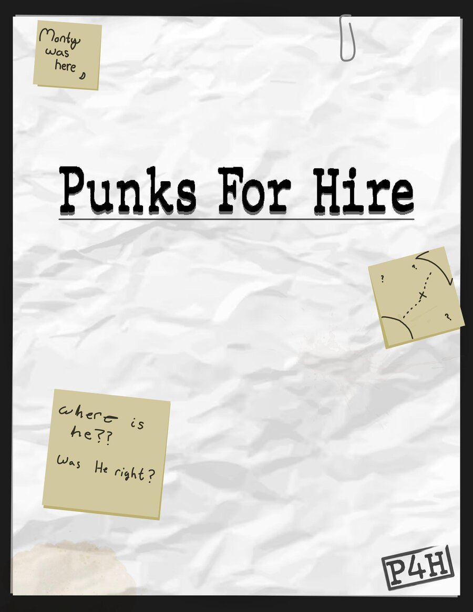
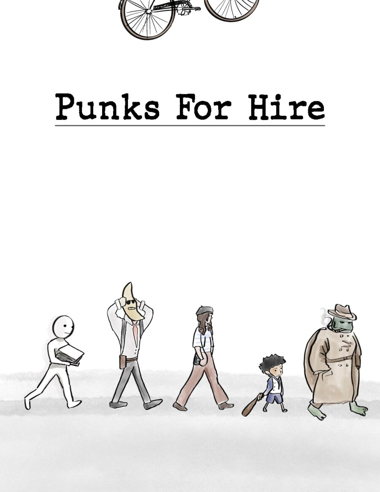
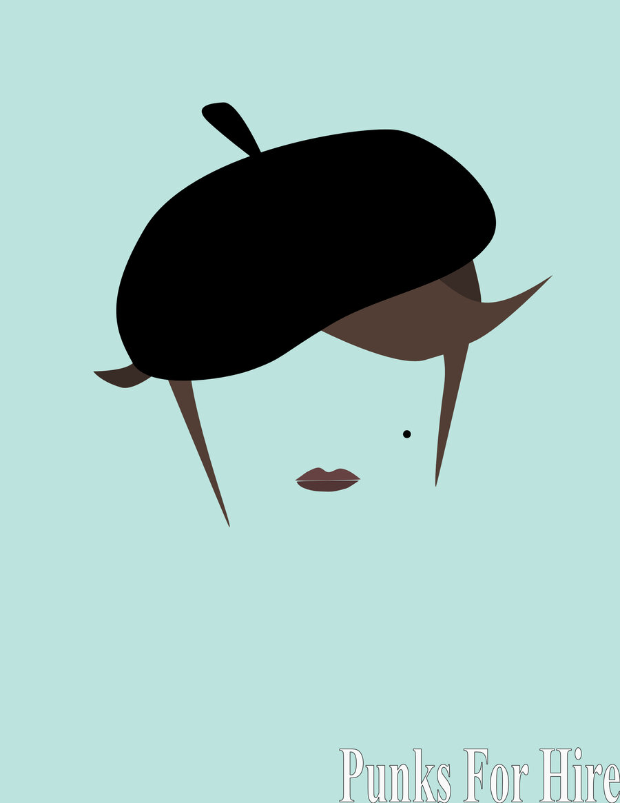
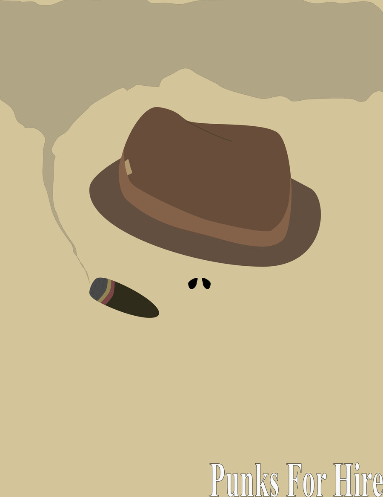
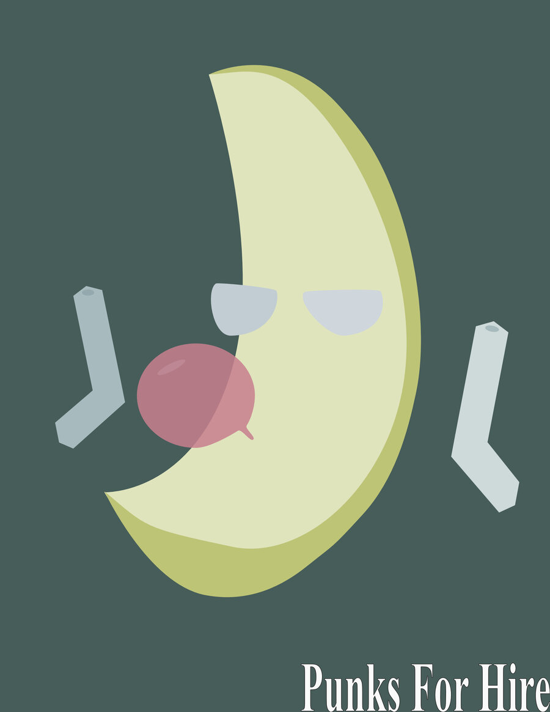
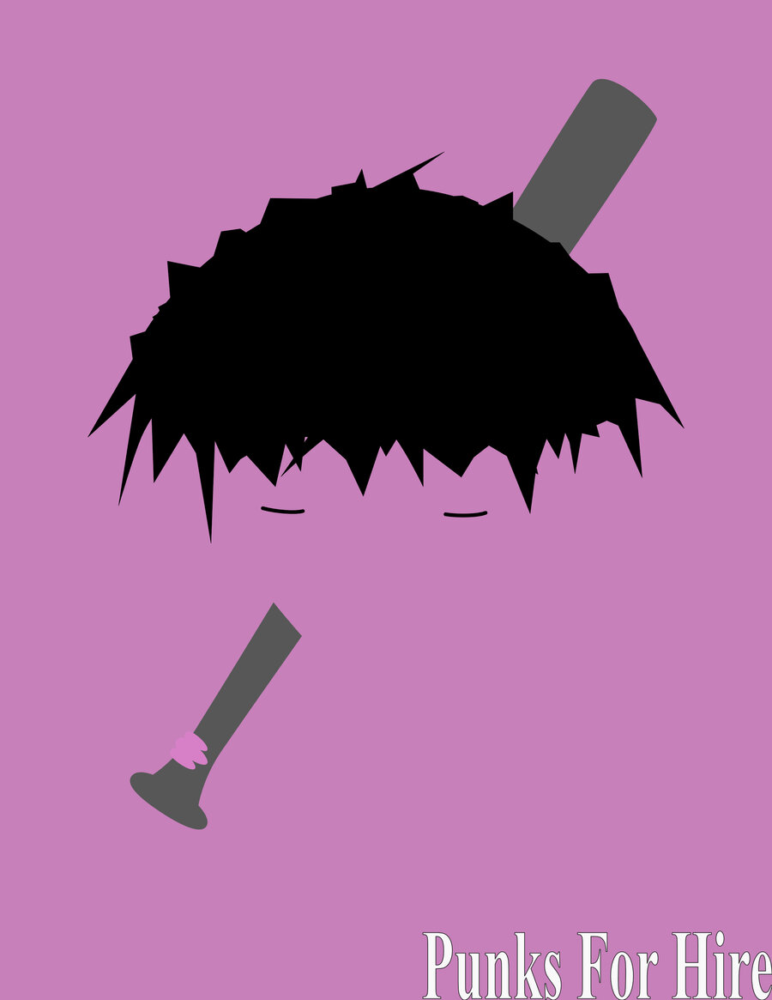
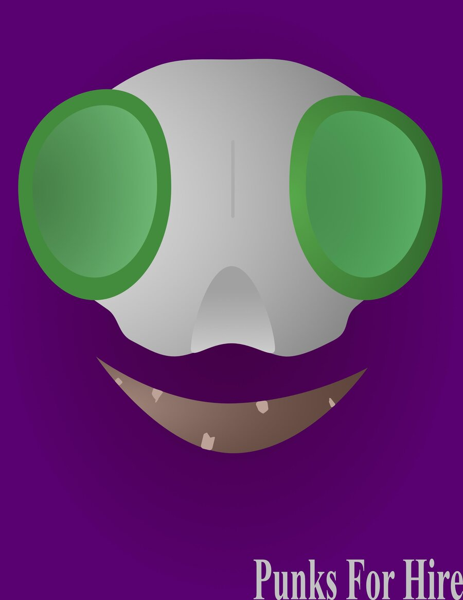
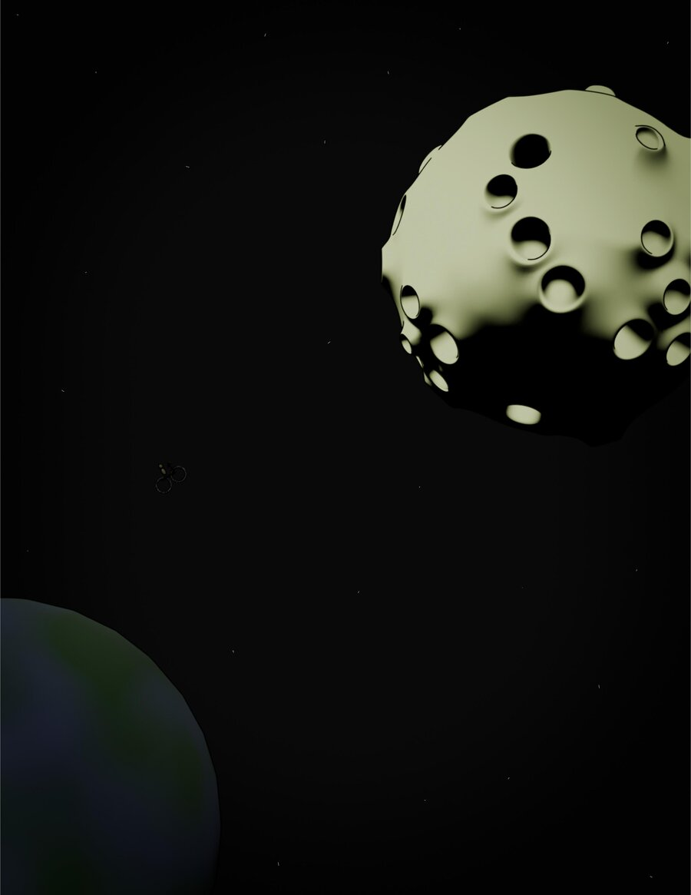

Other Projects
Punks for Hire — Pilot Script & Series Bible
A ten-episode animated drama I wrote and developed, following a crew of misfits in the year 2106 trying to solve the world's biggest mystery: ten years ago, "God" appeared on every screen on Earth — and then left. Combines the world-building of shows like Dorohedoro, Mad Max, and Cyberpunk: Edgerunners with a story about faith, grief, and moving on.

Read the Pilot Script
The full 32-page pilot episode, "Punks for Hire," following Beau as she talks her way — and dies her way — into the city's strangest private investigation agency.
Read the Script (PDF)
View the Series Bible
World, characters, factions, visual aesthetic, and a two-season pitch outlining where the story goes after the pilot.
View the Series Bible (PDF)Character Art from the Series Bible






Art Fight — 3D Character Renders
Art Fight is an annual community art challenge where participants create art of each other's original characters. I use it as an excuse to push my Blender skills on character work outside of school projects — different style, different pressure, good practice.
See the full gallery of renders on my Art Fight profile.
View My Art Fight Profile